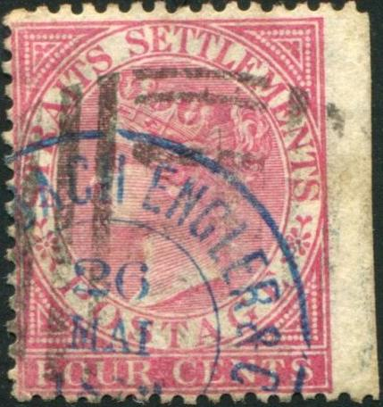
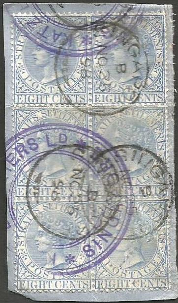

{kind=link}

Letter with circular "KALTENBACH ENGLER & Co SINGAPORE" with date in the center. Also with mute 'normal' cancels.
Return To Catalogue - Firm chops letters A-B - Firm chops letters C-J - Firm chops letters L-M - Firm chops letters N-Z - Straits Settlements 1867 issue - Straits Settlements 1868-1901 - Straits Settlements cancels
Note: on my website many of the
pictures can not be seen! They are of course present in the cd's;
contact me if you want to purchase them.
The stamps of Straits Settlements are almost always heavily cancelled, most of the time they also bear firm chops (as a protection against theft). Some of them are large enough to cover three individual stamps. The following website http://www.michelhoude.com shows many of such chops and provides very useful information. More information on some firms that used these chops: http://seasiavisions.library.cornell.edu/catalog/seapage:233_675. A list of forwarding agents can be found at: http://pbbooks.com/webfa.htm Examples of such chops:

Letter with circular "KALTENBACH ENGLER & Co
SINGAPORE" with date in the center. Also with mute 'normal'
cancels.
"KALTENBACH ENGLER & Co SINGAPORE & SAIGON" in
a double ellipse (with empty central part)
"KALTENBACH FISCHER & Co"?

"Wm Mc KERROW SINGAPORE FORWARDED"
"KHEAN GUAN"
"KUMPERS & CO SINGAPORE", only in red? Another type
exists with 'KUMPERS & Co" in the outside of a double
ellipse with the date in the center (next image).
Straits Settlements firm chops on early stamps, L-M